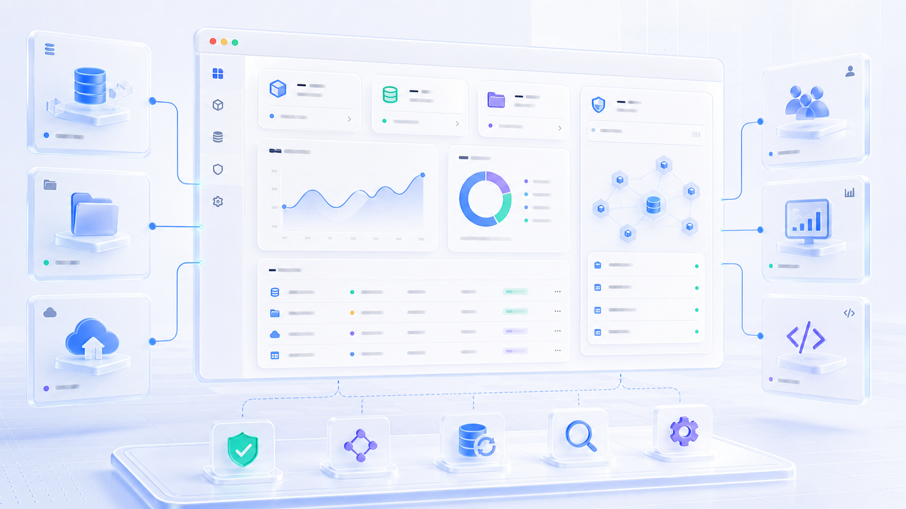
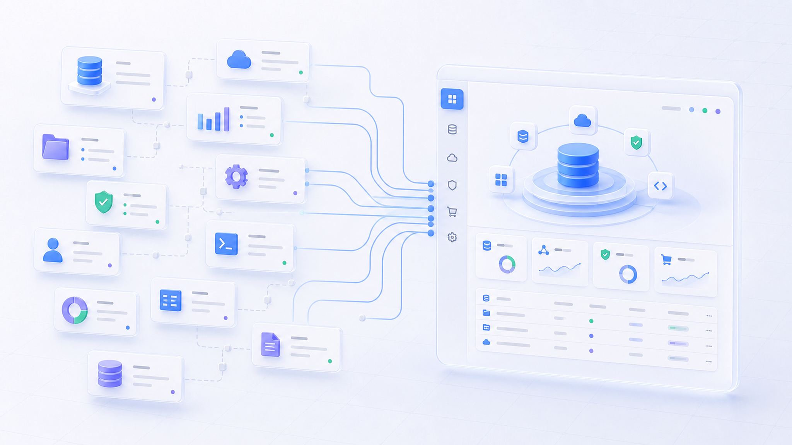
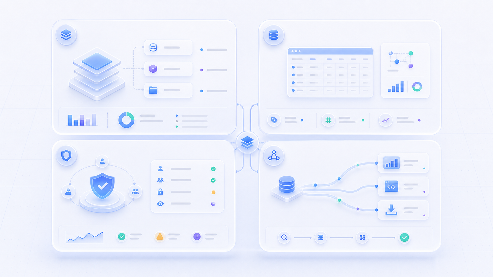
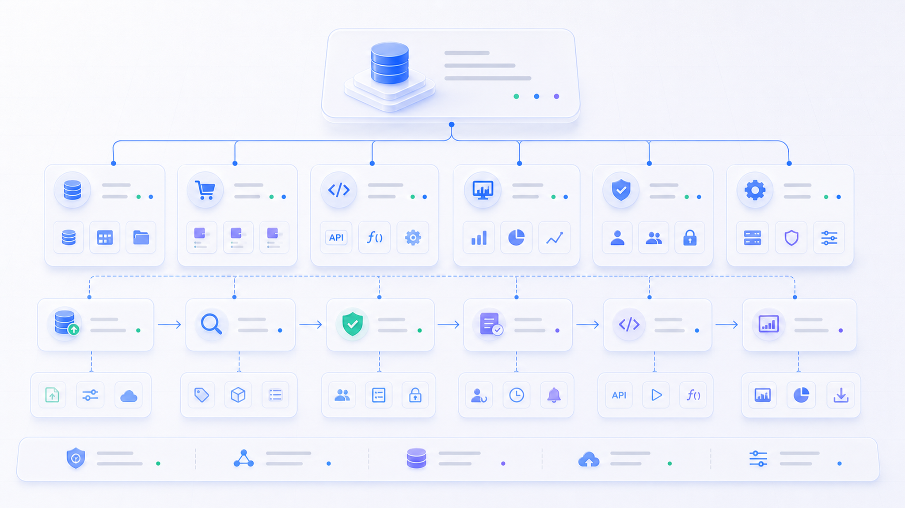
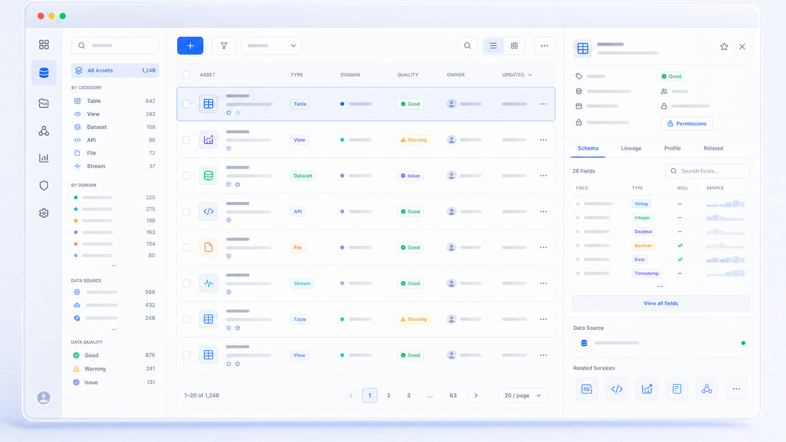
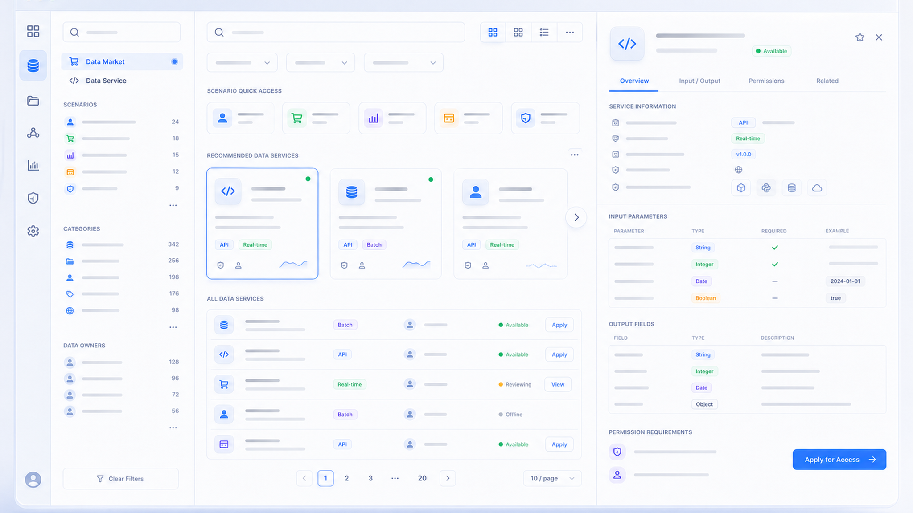
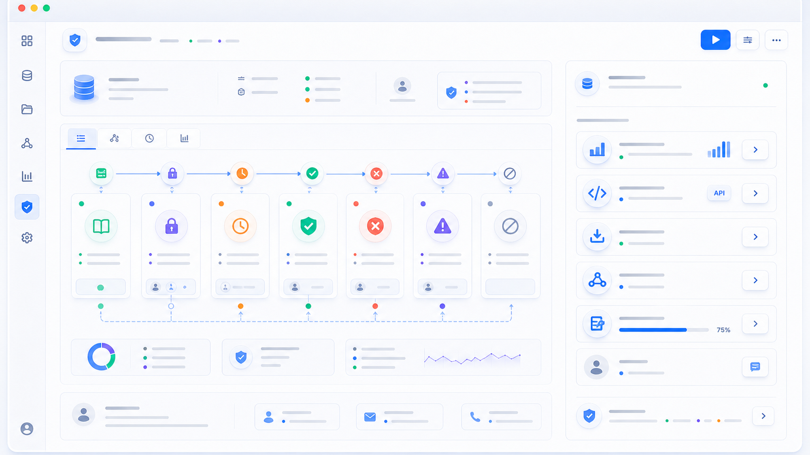
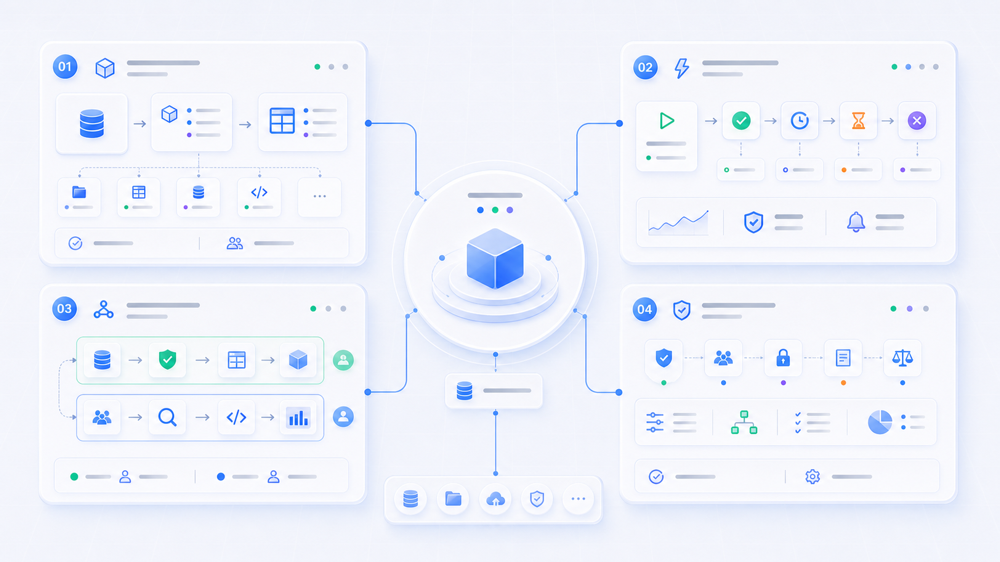
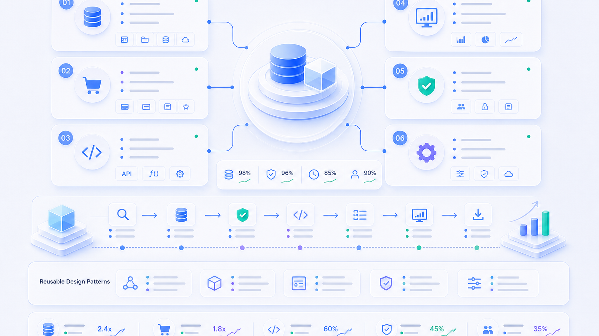

找到并使用数据
搜索数据资产，理解字段和适用场景，确认权限状态，发起申请，并进入看板、API、下载等消费入口。
云内部数据管理与消费一站式平台
一个面向云内部业务场景的数据管理与数据消费平台，将数据资产、数据市场、数据服务、权限状态、消费入口和平台管理组织成统一体验，帮助内部团队完成数据发现、理解、申请、服务使用和业务消费。

01 项目背景
在云内部业务场景中，数据分布在不同系统、团队和流程中。用户需要查找数据、理解字段、确认权限、申请服务并进入业务消费，但相关能力常常分散在多个入口里。
不同角色关注点也不同：数据管理人员关注资产、字段、状态、权限和负责人；业务用户关注能否快速找到可用数据并完成申请；数据运营人员关注上架、标签、推荐和复用；平台管理人员关注用户、角色、流程和规则配置。
核心问题：如何将分散的数据管理、数据服务与数据消费能力，整合成一套清晰、高效、可扩展的一站式平台体验？

02 用户角色与关键任务
搜索数据资产，理解字段和适用场景，确认权限状态，发起申请，并进入看板、API、下载等消费入口。
管理资产分类、字段说明、数据来源、状态、负责人、更新时间、权限入口和关联服务。
维护数据上架、场景标签、市场推荐、热门资产和复用路径，让优质数据更容易被找到。
管理用户、角色、权限规则、审批流程、平台配置和异常状态，保证平台长期可扩展。

03 设计挑战
Data Platform 的难点不是把所有数据能力放进一个菜单，而是为不同角色建立清晰的对象关系和任务路径。用户既要理解资产，也要判断权限、申请服务、进入消费场景。
04 信息架构设计
信息架构围绕“资产管理、数据发现、数据服务、权限状态、平台管理”展开。核心价值是让平台从功能集合变成可理解的数据对象系统，用户可以围绕对象完成管理、发现、申请、服务和消费。
Data Platform = Data Asset + Data Market + Data Service + Data Consumption + Permission + Platform Management

05 核心方案 1：数据资产管理

列表突出资产名称、业务域、数据类型、状态、负责人、更新时间和权限状态，并提供分类、搜索和筛选入口。
详情页集中展示字段说明、数据来源、质量状态、适用场景、关联服务、负责人和权限申请入口，降低业务用户理解成本。
06 核心方案 2：数据市场与数据服务
数据市场偏消费视角，帮助用户通过搜索、分类筛选、场景标签、数据卡片、详情页和申请入口完成从发现到申请的路径。数据服务则把数据能力服务化，支持服务列表、服务详情、输入参数、输出字段、权限要求、服务状态、服务申请和消费入口。
设计重点是让用户从“找到数据”自然进入“申请数据”和“使用服务”，避免在专业名词、权限状态和系统入口之间反复切换。


07 核心方案 3：权限状态与消费入口
权限和状态是 Data Platform 的关键体验。用户需要清楚知道当前对象是否可用、是否有权限、流程到哪一步、下一步能做什么。消费入口则连接数据资产、数据服务和业务使用场景。
08 关键设计决策
关键设计决策不是增加页面数量，而是先定义平台对象，再围绕对象关系组织页面和状态。这样用户进入任意数据对象时，都能理解它是什么、是否可用、如何申请、如何消费。


09 项目价值与成果
对用户，平台降低数据发现、理解和申请成本，减少多系统切换，并增强权限状态、申请状态和服务状态透明度。对业务，平台支撑数据从管理、发现、申请、服务到消费的完整协作链路。对平台侧，设计沉淀出可复用的信息架构、状态语言和消费入口模式。